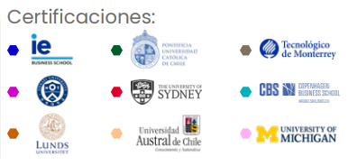

📖 Licenciatura Ejecutiva en Historia
Aplica EQ | Categoría: Ciencias Sociales
📖 ¿De qué trata esta Licenciatura?
Forma profesionistas capaces de analizar, interpretar y difundir procesos históricos con sentido crítico y metodológico, así como diseñar estrategias para la conservación del patrimonio histórico y cultural.
📌 Detalles del Programa
- ⏳ Duración: 4 años (12 cuatrimestres).
- 🛡️ Modalidad: 100% en línea.
- Plataforma: Blackboard con acceso 24/7.
- Clases: 1 a 2 sesiones semanales opcionales (grabadas).
- Soporte: Asistente Lince disponible todo el año.
- Recursos: Biblioteca virtual y paquetería Office incluida.
🌟 Razones para Estudiar en UVM
- Doble Titulación: Título nacional + Bachelor of Science in Management en EE.UU. (opcional).
- Certificaciones Coursera: Cursos y certificaciones con validez internacional en áreas clave.
- Enfoque práctico: Desarrollo de habilidades investigativas, didácticas y de gestión patrimonial.
- Alta empleabilidad: Hasta 80% de mejora laboral (Ipsos/UVM 2020).
💼 Oportunidades Laborales
Podrás desarrollarte en sectores como:
- 📌 Docencia: Profesor de historia en niveles medio superior y superior.
- 📌 Medios de comunicación: Asesor para contenido histórico en documentales, cine, radio o televisión.
- 📌 Patrimonio cultural: Proyectos de curaduría, museografía y conservación histórica.
- 📌 Investigación: Instituciones académicas, centros de investigación y archivos históricos.
- 📌 Diseño instruccional: Elaboración de materiales y contenidos educativos en plataformas digitales.
🎓 Certificaciones Internacionales
🎯 Tips para Vender la Licenciatura
- 💡 "Perfecta si te apasiona el pasado, la cultura, la educación y quieres dejar huella en la sociedad."
- 🔍 "Te prepara para trabajar en proyectos culturales, investigación o creación de contenido histórico digital."
- 📌 "Tendrás herramientas para trabajar en escuelas, museos, medios o consultorías culturales."
🛑 Objeciones Comunes y Respuestas
- ❓ "¿Solo podré ser maestro de historia?"
✅ "No. Puedes trabajar también en investigación, medios, museos o diseño de contenido histórico." - ❓ "¿Tiene campo laboral?"
✅ "Sí. Las instituciones culturales, educativas y digitales demandan profesionales con visión histórica." - ❓ "¿Y si no tengo experiencia en docencia o historia?"
✅ "No te preocupes, comenzarás desde lo básico con un enfoque muy práctico."